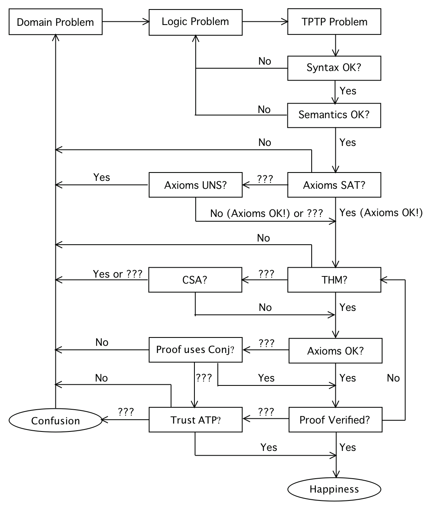

The ATP Process

- Specify the problem - the axioms and the conjecture
- Write the problem's axioms and conjecture in the domain language
- Write the problem in a logic
- Write the problem in a machine readable syntax (using a
TPTP language).
- Check the syntax of the problem (using
SystemB4TPTP)
- Yes - move on to check the semantics of the problem
- No - return to creating the machine readable file
- Check the semantics (types) of the problem (using
SystemB4TPTP)
- Yes - move on to check the consistency of the axioms
- No - return to creating the machine readable file
- Check the consistency of the axioms (using
SystemOnTPTP)
- Establish that the axioms are satisfiable
- Yes - move on to establish logical consequence
- No - examine model/saturation, return to specify the problem
- Unknown - establish that the axioms are unsatisfiable
- Establish that the axioms are unsatisfiable
- Yes - examine the refutation (using
IDV), return to specify
the problem
- No - move on to establish logical consequence
- Unknown - move on to establish logical consequence (and worry)
- Establish logical consequence (using
SystemOnTPTP)
- Prove the theorem
- Yes - move on to process the proof
- No - return to specify the problem
- Unknown - prove it's not a theorem
- Prove it's not a theorem
- Yes - return to specify the problem
- No - move on to processing the proof
- Unknown - return to specify the problem
- Process the proof
- Are the axioms are known to be SAT?
- Yes - verify the proof
- No - check if the conjecture is used in proof
- If the axioms used in the proof are a subset of all the axioms,
could check for their consistency.
- Check if the conjecture is used in proof
- Yes - assume the axioms are OK, verify the proof
- No - return to specify the problem
- Unknown - ask if the ATP system is trusted
- Verify the proof (using GDV)
- Yes - happiness
- No - return to establish logical consequence with a different
ATP system
- Unknown - ask if the ATP system is trusted
- Is the ATP system trusted?
- Yes - happiness
- No - return to specify the problem
- Unknown - confusion, return to specify the problem
- Examples for the ATP Process